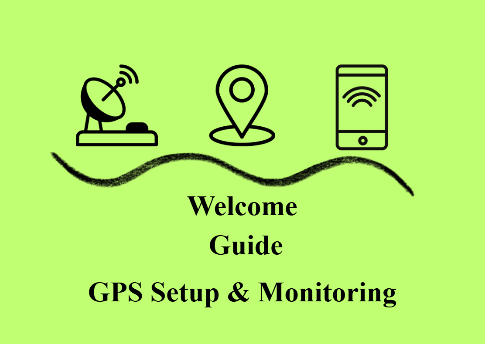

This guide will help you set up and use your GPS tracking device. Follow these simple steps to get started with real-time location monitoring.

First Time Setup
To access your device for the first time, scan the QR code located on the back of your WatchOver device using your phone's camera.
[Photo: QR code on back of device]
The QR code contains your unique Device ID. Your default password is 12345. After scanning, these credentials will automatically fill in the login fields.
Important: For security, please change your password after your first login.
Understanding the Map
The map displays the real-time location of your device. The marker shows the current position, and you can zoom in/out or drag to explore the surrounding area.
[Screenshot: Map interface with location marker]
The map automatically updates when new location data is received from your device.
Device Information
The information panel displays essential tracking details:
Location Icon
Current Location
Shows the address or coordinates of the device's latest position
Clock Icon
Time of Last Update
Displays when the device last transmitted location data
Signal Icon
Device Status
Indicates whether the device is actively transmitting data
Battery Icon
Battery Level
Shows the remaining battery percentage of your device
Viewing Activity History
Click the "Activity History" button to view the device's location timeline and movement patterns over time.
[Screenshot: Activity History button interface]
This feature allows you to track where the device has been and review past locations.
Menu Navigation
Use the bottom navigation bar to move between sections:
[Screenshot: Bottom navigation bar]
Home: Returns to the main map view Logout: Securely exits your session